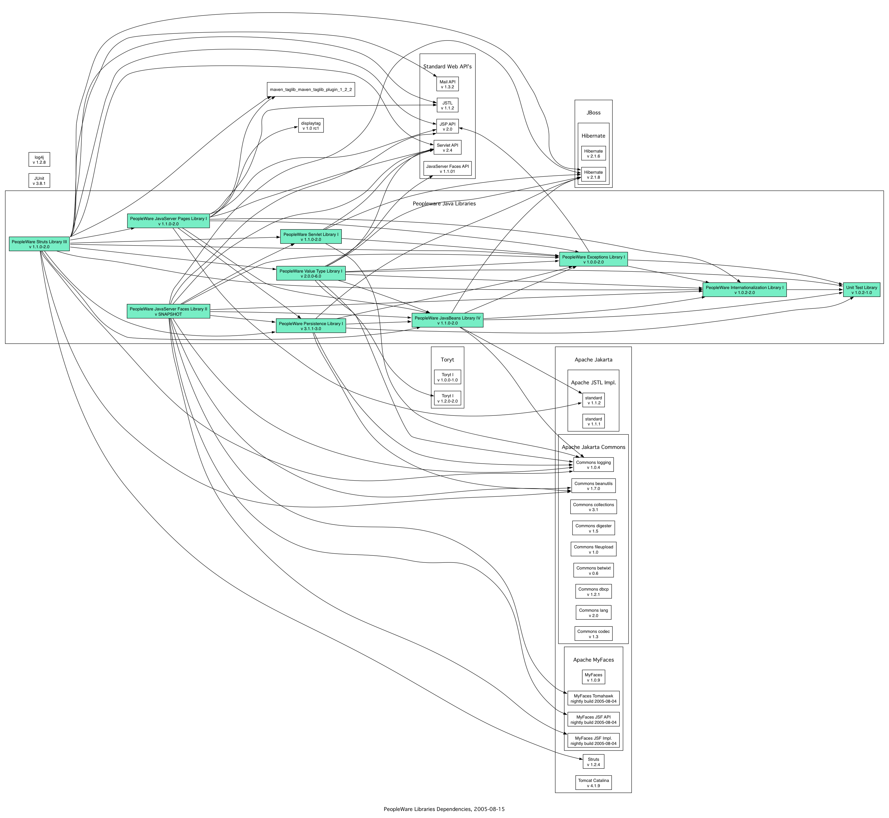

| Library | Compatibility Versions | Maven Repo Search | |||||||
|---|---|---|---|---|---|---|---|---|---|
| ppw-test | I | II | III | IV | V | VI | VII | VIII |
Courtesy of Ozacc |
| ppw-i18n | I | II | III | IV | V | VI | VII | VIII | |
| ppw-exception | I | II | III | IV | V | VI | VII | VIII | |
| ppw-bean | I | II | III | IV | V | VI | VII | VIII | |
| ppw-value | I | II | III | IV | V | VI | VII | VIII | |
| ppw-value-hibernate | I | deprecated | |||||||
| ppw-servlet | I | II | III | IV | V | VI | VII | VIII | |
| ppw-jsp | I | II | III | IV | V | VI | VII | VIII | |
| ppw-struts | I | II | III | IV | V | VI | VII | VIII | |
| ppw-persistence | I | II | III | IV | V | VI | VII | VIII | |
| ppw-jsf | I | II | III | IV | V | VI | VII | VIII | |
| Toryt | I | II | III | IV | V | VI | VII | VIII | |
Dependencies are mandatory for development, but not necessarily for use of a library.
To keep the number of libraries manageable, we have choosen
to add specific implementations of an API in subpackages that are distributed
together with the API. E.g., there is a API in ppw-bean that
covers persistency in a persistency-technology agnostic way. Implementations
are made, or can be made, of this API, for Hibernate, JDO, EJB 2, EJB
3, pure JDBC, etcetara. All these implementations are, or will be, gathered
in specific subpackages of the API, and included in the library that
carries
the API.
This means that, for compilation of those subpackages, the external libraries
this code depends on (in casu, hibernate.jar, the jars for JDO
and J2EE, etcetera), are needed in the classpath. The project maven settings
take care of this.
It would be bad however if a developer would need to provide the J2EE jars
in finished application that uses the Hibernate persistence technology,
and doesn't use J2EE at all. But luckily, through the magic of dynamic
loading, this is not necessary in Java. The class loaders will only try
to load the J2EE classes, and thus will look for the jar in the CLASSPATH,
if a class is loaded that refers to this external library. If these classes
that depend on a particular external library are never used in you application,
the external library will never be needed.
In the graph below, such optional dependencies are colored blue. The mandatory dependencies are colored black. Dependencies that are only needed for the unit testing, are colored chocolate.
Click for the full-size version.
